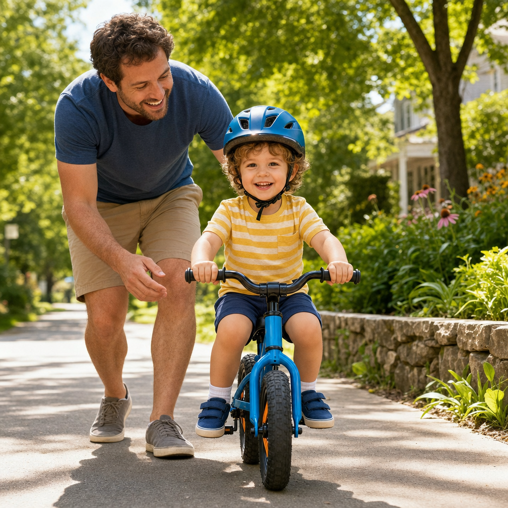
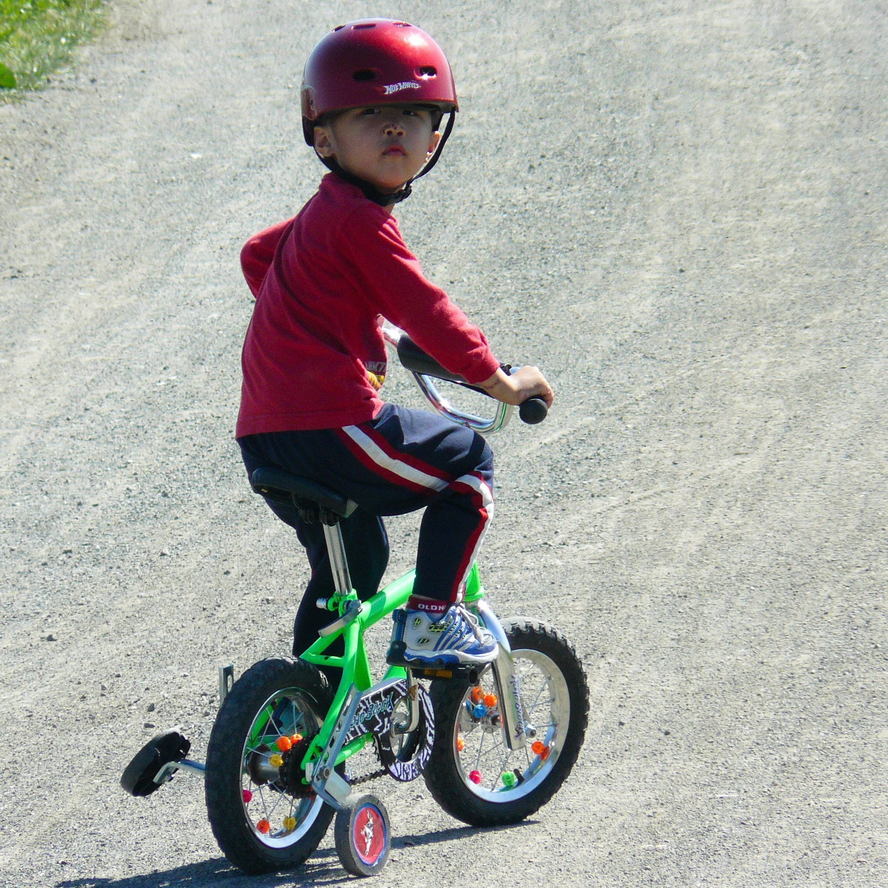
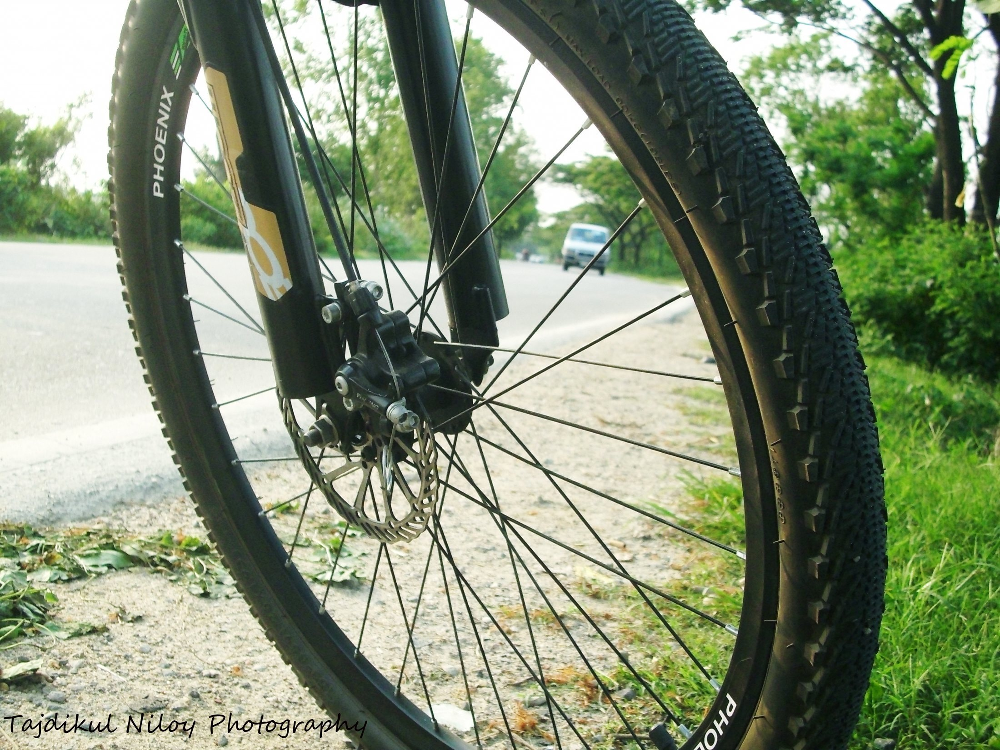
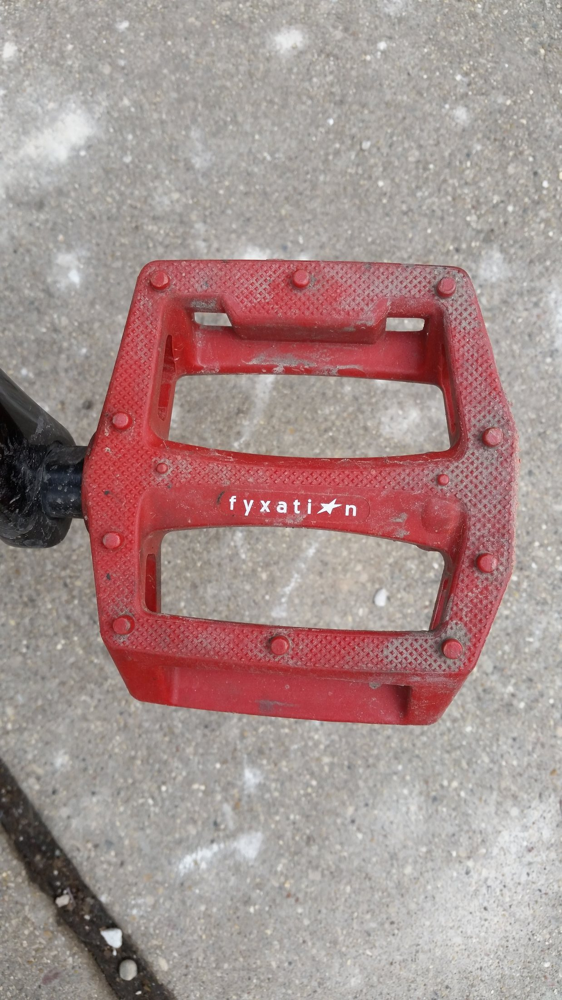
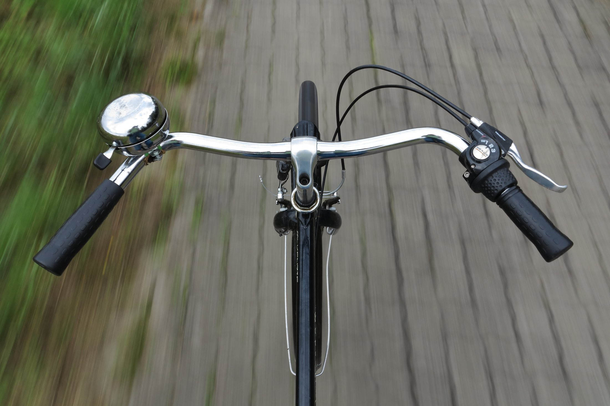
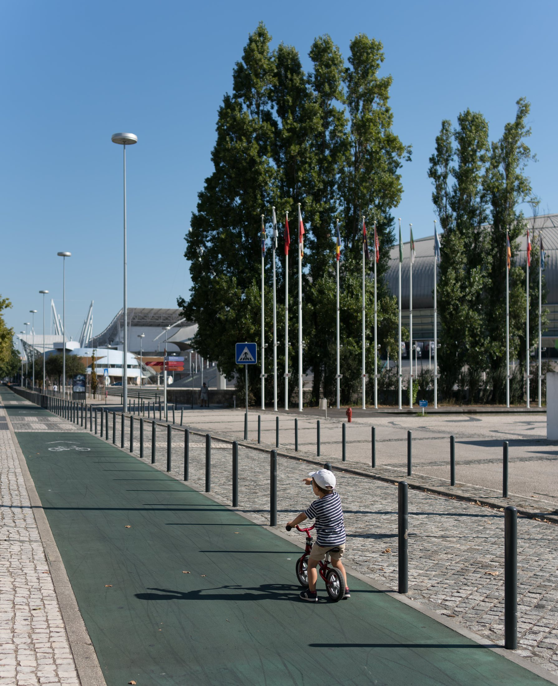
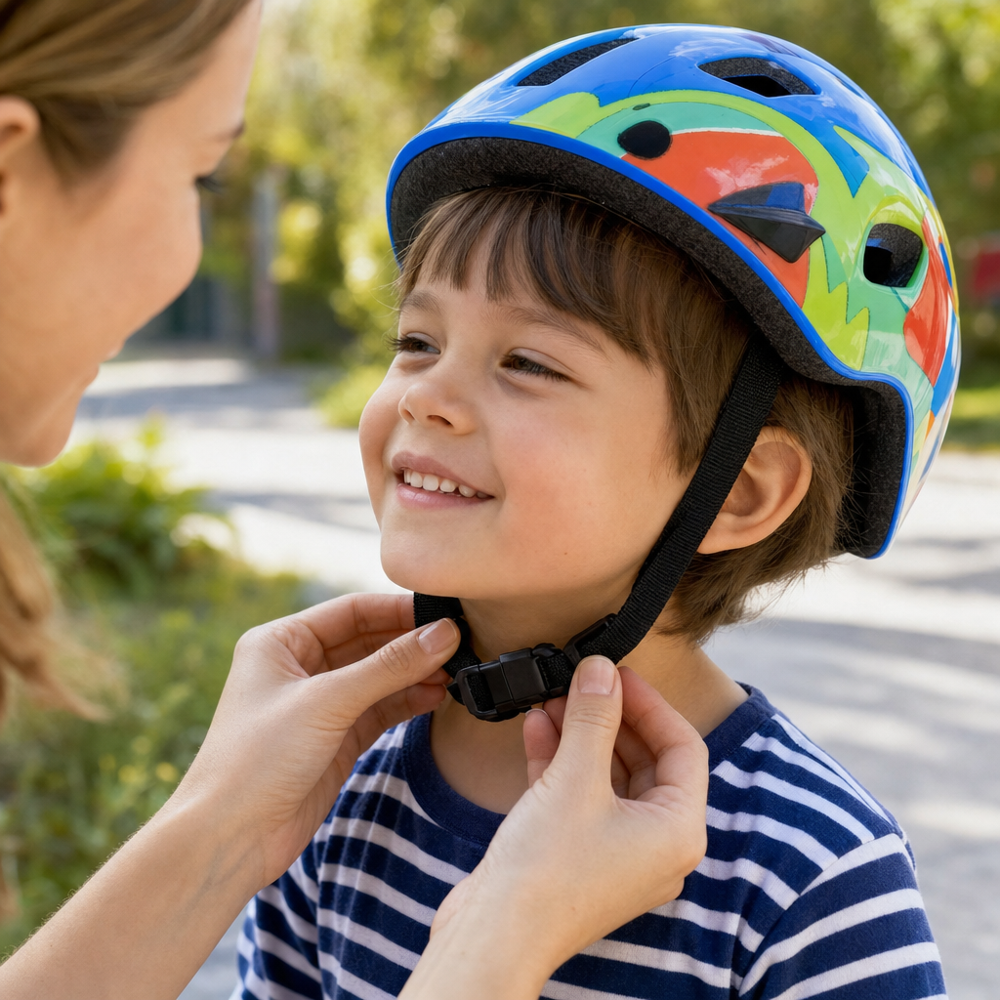
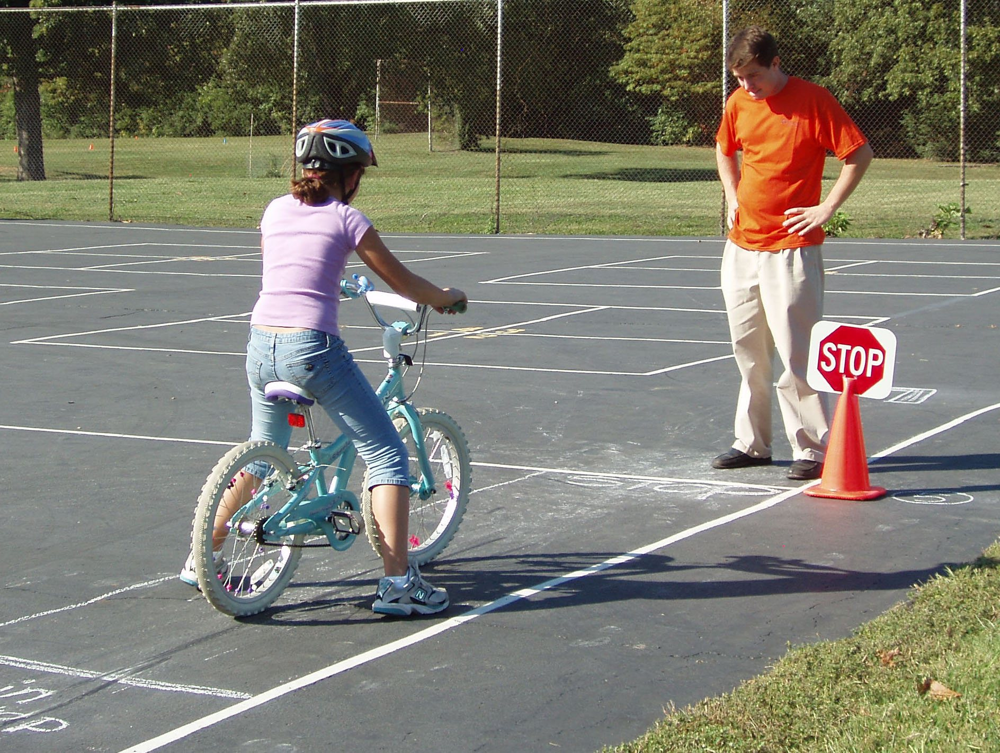
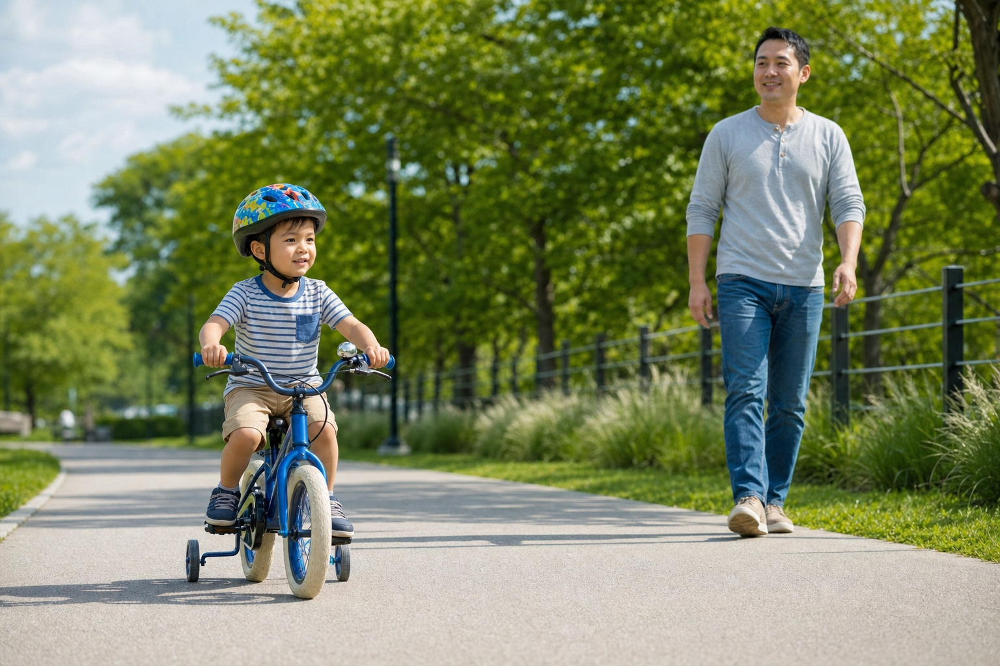
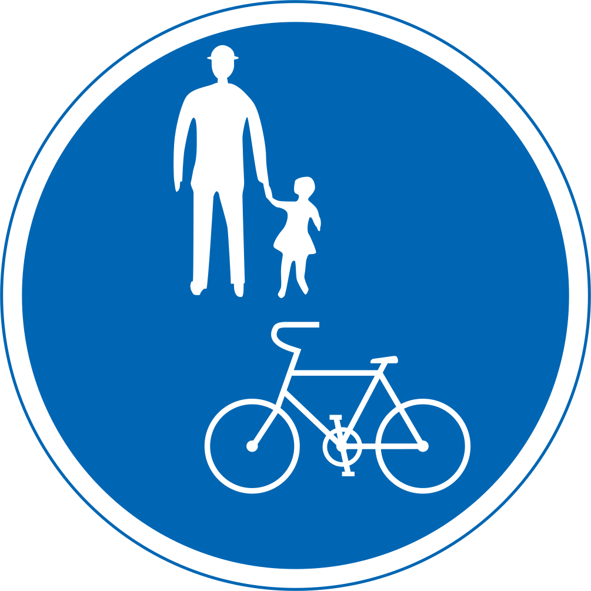

Bike Ride Around the Block
Pedal, steer, stop, smile

Pedal, steer, stop, smile

This is a bicycle. It has two wheels. It has a seat. A rider makes it go.
The wheels roll. The tires touch the path. Roll, roll, roll.

Feet push the pedals. Around and around. The bike moves forward.


Hands hold the handlebars. Turn a little. The front wheel turns too.
Some little bikes have no pedals. Feet push, push. The rider learns to balance.

Helmet on. Strap snug. Shoes on. Ready to ride.


Slow down. Stop. Look both ways with a grown-up. Then go again.


Ride on the path. Give walkers room. Ding, ding! A bell can say, 'I am coming by.'